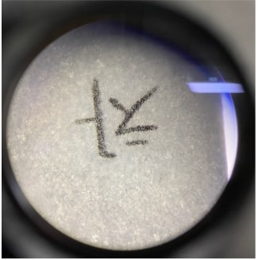
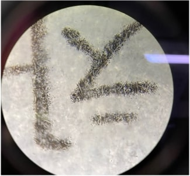
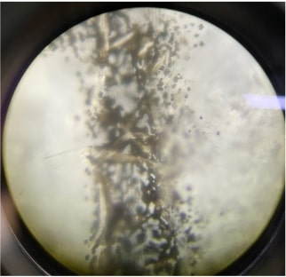

현미경 실험
이 실험은 현미경의 구조를 알고 현미경의 사용법을 익히기 위해서 진행된 실험으로 현미경의 사용에 익숙해지기 위해 각각의 배율들로 글자를 관찰하여 상을 찾고 초점을 맞추는 연습을 한다.
4배 대물렌즈에서는 하얀 종이와 함께 글자 전체가 180° 회전해서 나타나고, 10배 대물렌즈에서는 글자만 180°회전해서 나타났다. 또한 40배 대물렌즈에서는 글자의 형태를 알아볼 수 없는 잉크 얼룩이 관찰되었다.
실험
1. 하나의 글자를 잘라서 슬라이드를 만들었다.
2. 슬라이드를 재물대의 고정장치를 이용하여 고정했다.
3. 관찰할 위치에 4배 대물렌즈를 놓고 대안렌즈로 표본을 찾고 초점을 맞추어 관찰하였다.
4. 관찰할 위치에 10배 대물렌즈를 놓고 대안렌즈로 표본을 찾고 초점을 맞추어 관찰하였다.
5. 관찰할 위치에 40배 대물렌즈를 놓고 대안렌즈로 표본을 찾고 초점을 맞추어 관찰하였다.


